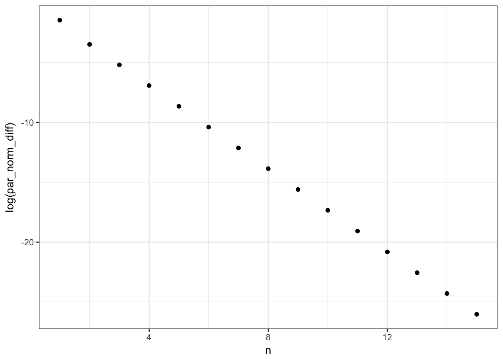

9.1 Basic properties
In this section the EM algorithm is formulated and shown to be a descent algorithm for the negative log-likelihood. Allele frequency estimation for the peppered moth is considered as a simple example showing how the algorithm can be implemented.
9.1.1 Incomplete data likelihood
Suppose that \(Y\) is a random variable and \(X = M(Y)\). Suppose that \(Y\) has density \(f(\cdot \mid \theta)\) and that \(X\) has marginal density \(g(x \mid \theta)\).
The marginal density is typically of the form \[g(x \mid \theta) = \int_{\{y: M(y) = x\}} f(y \mid \theta) \ \mu_x(\mathrm{d} y)\] for a suitable measure \(\mu_x\) depending on \(M\) and \(x\) but not \(\theta\). The general argument for the marginal density relies on the coarea formula.
The log-likelihood for observing \(X = x\) is \[\ell(\theta) = \log g(x \mid \theta).\] The log-likelihood is often impossible to compute analytically and difficult and expensive to compute numerically. The complete log-likelihood, \(\log f(y \mid \theta)\), is often easy to compute, but we don’t know \(Y\), only that \(M(Y) = x\).
In some cases it is possible to compute \[Q(\theta \mid \theta') := E_{\theta'}(\log f(Y \mid \theta) \mid X = x),\] which is the conditional expectation of the complete log-likelihood given the observed data and computed using the probability measure given by \(\theta'\). Thus for fixed \(\theta'\) this is a computable function of \(\theta\) depending only on the observed data \(x\).
One could get the following idea: with an initial guess of \(\theta' = \theta_0\) compute iteratively \[\theta_{n + 1} = \textrm{arg max} \ Q(\theta \mid \theta_n)\] for \(n = 0, 1, 2, \ldots\). This idea is the EM algorithm:
- E-step: Compute the conditional expectation \(Q(\theta \mid \theta_n )\).
- M-step: Maximize \(\theta \mapsto Q(\theta \mid \theta_n )\).
It is a bit weird to present the algorithm as a two-step algorithm in its abstract formulation. Even though we can regard \(Q(\theta \mid \theta_n)\) as something we can compute abstractly for each \(\theta\) for a given \(\theta_n\), the maximization is in practice not really done using all these evaluations. It is computed either by an analytic formula involving \(x\) and \(\theta_n\), or by a numerical algorithm that computes certain evaluations of \(Q( \cdot \mid \theta_n)\) and perhaps its gradient and Hessian. In computing these specific evaluations there is, of course, a need for the computation of conditional expectations, but we would compute these as they are needed and not upfront.
However, in some of the most important applications of the EM algorithm, particularly for exponential families covered in Section 9.2, it makes a lot of sense to regard the algorithm as a two-step algorithm. This is the case whenever \(Q(\theta \mid \theta_n) = q(\theta, t(x, \theta_n))\) is given in terms of \(\theta\) and a function \(t(x, \theta_n )\) of \(x\) and \(\theta_n\) that doesn’t depend on \(\theta\). Then the E-step becomes the computation of \(t(x, \theta_n )\), and in the M-step, \(Q(\cdot \mid \theta_n )\) is maximized by maximizing \(q(\cdot, t(x, \theta_n ))\), and the maximum is a function of \(t(x, \theta_n )\).
9.1.2 Monotonicity of the EM algorithm
We prove below that the algorithm (weakly) increases the log-likelihood in every step, and thus is a descent algorithm for the negative log-likelihood \(H = - \ell\).
It holds in great generality that the conditional distribution of \(Y\) given \(X = x\) has density
\[\begin{equation} h(y \mid x, \theta) = \frac{f(y \mid \theta)}{g(x \mid \theta)} \tag{9.1} \end{equation}\]w.r.t. the measure \(\mu_x\) as above (that does not depend upon \(\theta\)), and where \(g\) is the density for the marginal distribution.
This can be verified quite easily for discrete distributions and when \(Y = (Z, X)\) with joint density w.r.t. a product measure \(\mu \otimes \nu\) that does not depend upon \(\theta\). In the latter case, \(f(y \mid \theta) = f(z, x \mid \theta)\) and \[g(x \mid \theta) = \int f(z, x \mid \theta) \ \mu(\mathrm{d} z)\] is the marginal density w.r.t. \(\nu\).
Whenever (9.1) holds it follows that
\[\ell(\theta) = \log g(x \mid \theta) = \log f(y \mid \theta) - \log h(y \mid x, \theta),\] where \(\ell(\theta)\) is the log-likelihood.
Proof. Since \(\ell(\theta)\) depends on \(y\) only through \(M(y) = x\),
\[\begin{align} \ell(\theta) & = E_{\theta'} ( \ell(\theta) \mid X = x) \\ & = \underbrace{E_{\theta'} ( \log f(Y \mid \theta) \mid X = x)}_{Q(\theta \mid \theta')} + \underbrace{ E_{\theta'} ( - \log h(Y \mid x, \theta) \mid X = x)}_{H(\theta \mid\theta')} \\ & = Q(\theta \mid \theta') + H(\theta \mid \theta'). \end{align}\]Now for the second term we find, using Jensen’s inequality for the convex function \(-\log\), that
\[\begin{align} H(\theta \mid \theta') & = \int - \log(h(y \mid x, \theta)) h(y \mid x, \theta') \mu_x(\mathrm{d}y) \\ & = \int - \log\left(\frac{h(y \mid x, \theta)}{ h(y \mid x, \theta')}\right) h(y \mid x, \theta') \mu_x(\mathrm{d}y) + \int - \log(h(y \mid x, \theta')) h(y \mid x, \theta') \mu_x(\mathrm{d}y) \\ & \geq -\log \left( \int \frac{h(y \mid x, \theta)}{ h(y \mid x, \theta')} h(y \mid x, \theta') \mu_x(\mathrm{d}y) \right) + H(\theta' \mid \theta') \\ & = -\log\underbrace{\left( \int h(y \mid x, \theta) \mu_x(\mathrm{d}y)\right) }_{=1} + H(\theta' \mid \theta') \\ & = H(\theta' \mid \theta'). \end{align}\]From this we see that
\[\ell(\theta) \geq Q(\theta \mid \theta') + H(\theta' \mid \theta')\]
for all \(\theta\) and the right hand side is a so-called minorant for the log-likelihood. Observing that
\[\ell(\theta') = Q(\theta' \mid \theta') + H(\theta' \mid \theta').\]
completes the proof of the theorem.Note that the proof above can also be given by referring to Gibbs’ inequality in information theory stating that the Kullback-Leibler divergence is positive, or equivalently that the cross-entropy \(H(\theta \mid \theta')\) is smaller than the entropy \(H(\theta' \mid \theta')\), but the proof of this is, in itself, a consequence of Jensen’s inequality just as above.
It follows from Theorem 9.1 that if \(\theta_n\) is computed iteratively starting from \(\theta_0\) such that \[Q(\theta_{n+1} \mid \theta_{n}) > Q(\theta_{n} \mid \theta_{n}),\] then \[H(\theta_0) > H(\theta_1) > H(\theta_2) > \ldots.\] This proves that the EM algorithm is a strict descent algorithm for the negative log-likelihood as long as it is possible in each iteration to strictly increase \(\theta \mapsto Q(\theta \mid \theta_{n})\) above \(Q(\theta_{n} \mid \theta_{n}).\)
The term EM algorithm is usually reserved for the specific algorithm that maximizes \(Q(\cdot \mid \theta_n)\) in the M-step, but as we have seen, there is no reason to insist on the M-step being a maximization. A choice of descent direction of \(Q(\cdot \mid \theta_n)\) and a step-length guaranteeing sufficient descent will be enough to give a descent algorithm. Any such variation is usually termed a generalized EM algorithm.
One may imagine that the minorant could actually be a useful lower bound on the difficult-to-compute log-likelihood. The additive constant \(H(\theta' \mid \theta')\) in the minorant is, however, not going to be computable in general either, and it is not clear that there is any way to use the bound quantitatively.
9.1.3 Peppered moths
We return in this section to the peppered moths and the implementation of the EM algorithm for multinomial cell collapsing.
The EM algorithm can be implemented by two simple functions that compute the conditional expectations above (the E-step) and then maximization of the complete observation log-likelihood.
EStep0 <- function(p, x, group) {
x[group] * p / M(p, group)[group]
}The MLE of the complete log-likelihood is a linear estimator, as is the case in many examples with explicit MLEs.
MStep0 <- function(n, X)
as.vector(X %*% n / (sum(n)))The EStep0 and MStep0 functions are abstract implementations. They require specification of the arguments group and X, respectively, to become concrete.
The M-step is only implemented in the case where the complete-data MLE is a linear estimator, that is, a linear map of the complete data vector \(y\) that can be expressed in terms of a matrix \(\mathbf{X}\).
EStep <- function(par, x)
EStep0(prob(par), x, c(1, 1, 1, 2, 2, 3))
MStep <- function(n) {
X <- matrix(
c(2, 1, 1, 0, 0, 0,
0, 1, 0, 2, 1, 0) / 2,
2, 6, byrow = TRUE)
MStep0(n, X)
}The EM algorithm is finally implemented as an iterative, alternating call of EStep and MStep until convergence as measured in terms of the relative change from iteration to iteration being sufficiently small.
EM <- function(par, x, epsilon = 1e-6, trace = NULL) {
repeat{
par0 <- par
par <- MStep(EStep(par, x))
if(!is.null(trace)) trace()
if(sum((par - par0)^2) <= epsilon * (sum(par^2) + epsilon))
break
}
par ## Remember to return the parameter estimate
}
phat <- EM(c(0.3, 0.3), c(85, 196, 341))
phat## [1] 0.07083693 0.18877365We check what is going on in each step of the EM algorithm.
EM_tracer <- tracer("par")
EM(c(0.3, 0.3), c(85, 196, 341), trace = EM_tracer$trace)## n = 1: par = 0.08038585, 0.22464192;
## n = 2: par = 0.07118928, 0.19546961;
## n = 3: par = 0.07084985, 0.18993393;
## n = 4: par = 0.07083738, 0.18894757;
## n = 5: par = 0.07083693, 0.18877365;## [1] 0.07083693 0.18877365EM_tracer <- tracer(c("par0", "par"), N = 0)
phat <- EM(c(0.3, 0.3), c(85, 196, 341), epsilon = 1e-20,
trace = EM_tracer$trace)EM_trace <- summary(EM_tracer)
EM_trace <- transform(
EM_trace,
n = 1:nrow(EM_trace),
par_norm_diff = sqrt((par0.1 - par.1)^2 + (par0.2 - par.2)^2)
)
qplot(n, log(par_norm_diff), data = EM_trace)
Note the log-axis. The EM-algorithm converges linearly (this is the terminology, see Algorithms and Convergence). The log-rate of the convergence can be estimated by least-squares.
log_rate_fit <- lm(log(par_norm_diff) ~ n, data = EM_trace)
exp(coefficients(log_rate_fit)["n"])## n
## 0.1750251The rate is very small in this case implying fast convergence. This is not always the case. If the log-likelihood is flat, the EM-algorithm can become quite slow with a rate close to 1.